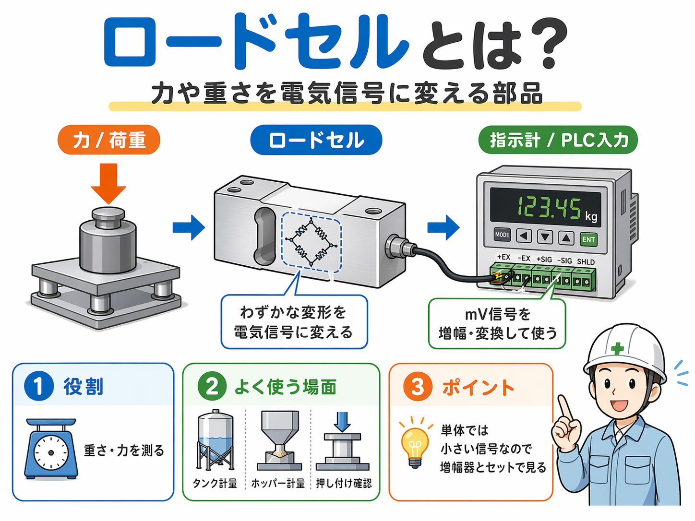
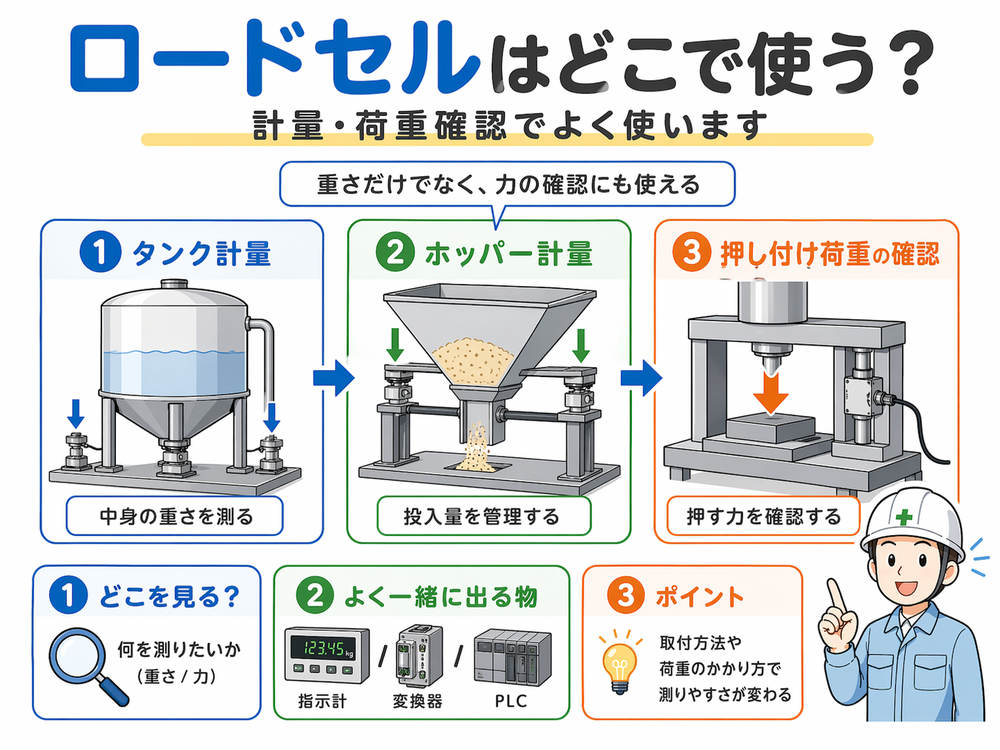

向いている人
- ロードセルが何をする部品か知りたい人
- 計量機器や荷重確認の基本をざっくり理解したい人
- タンク計量やホッパー計量で何を見ているのか知りたい人
- PLCや指示計につながる流れを初歩から整理したい人
ロードセルは、力や重さを電気信号に変える部品です。 最初は「重さや押す力を、電気で見られるようにする部品」と考えると追いやすいです。

ロードセルは、力や重さを電気信号に変える部品です。
タンク計量やホッパー計量、押し付け荷重確認などでよく使われます。
最初は「重さや押す力を電気で見られるようにする部品」として捉えると分かりやすいです。
ロードセルは、物が載った時の重さや、押した時の力を電気信号に変えるための部品です。
見た目は金属ブロックのようなものが多いですが、中ではわずかな変形を利用して信号に変えています。 そのため、見た目以上に測るための部品という性格が強いです。
現場では、タンクの中身の重さを見る、ホッパーへの投入量を管理する、プレスや押し付けの力を確認する、といった用途で使われます。 つまりロードセルは、重さだけでなく力の確認にも使える部品です。
タンクやホッパー、台の上に載った物の重さを見たい時に使います。
押し付け荷重や圧入力など、重さ以外の力を確認したい時にも使います。
ひずみゲージやブリッジ回路の細かい理論まで、最初から全部覚えなくても大丈夫です。 まず押さえたい流れは次の通りです。
この流れで見ると、ロードセルは単体だけで完結する部品ではないことが分かりやすいです。
ロードセルの役割をシンプルに言うと、荷重を見ることです。 ここでいう荷重には、重さだけでなく押し付けの力も含まれます。
タンクやホッパー、台の上に載った物の重さを見たい時に使います。
押し付け荷重や圧入力など、重さ以外の力を確認したい時にも使います。
ロードセルは計量専用の部品というより、荷重を見るための部品として理解すると実務に近い感覚で追いやすくなります。
現場では、計量だけでなく荷重確認でもよく使われます。特に次のような場面で見かけやすいです。
タンク脚の下にロードセルを入れて、中身の重さを見ます。液体や粉体の残量確認でもよく使われます。
材料を投入するホッパーの下で重さを見て、投入量や供給量を管理します。
ワークを押す工程や圧着・加圧の工程で、どれくらいの力がかかっているかを見る時に使います。

ここは初心者がつまずきやすいところですが、ロードセルは単体では小さい信号しか出しません。
そのため実際の設備では、次のようなものと一緒に出てくることが多いです。
つまり現場で見た時は、「ロードセル本体だけでなく、その後ろに何がつながっているか」も一緒に見るのが大事です。
ロードセルだけ見ても、そのまま数字が読めるとは限りません。指示計や変換器まで含めて見ると、装置全体の意味が分かりやすくなります。
ロードセルが出てきた時は、次の順で見ると整理しやすいです。
ロードセルだけ見ても、数字はそのまま分からないことが多いです。指示計や変換器とセットで見る必要があります。
同じロードセルでも、取り付け方が悪いと測りにくくなります。
どの方向の荷重を見たいのかが合っていないと、期待した値になりにくいです。
名前の印象で重量測定だけを想像しやすいですが、押し付け力の確認にも使われます。
最初は理論を深く追うよりも、
この3つを意識した方が、実務ではかなり追いやすいです。
ロードセルも、難しく見せようと思えばかなり難しくなります。 でも現場でまず大事なのは、その装置で何を見たいから付いているのかをつかむことです。
その意味でもロードセルは、「重さや力を電気信号に変える部品」として覚えるところから始めるのがおすすめです。
ロードセルは、力や重さを電気信号に変える部品です。 タンク計量、ホッパー計量、押し付け荷重の確認などでよく使われます。
最初は細かい理論よりも、
このあたりを追うと分かりやすいです。 ロードセルは、単体ではなく周辺機器とセットで見るという感覚を持っておくと、現場でもかなり追いやすくなります。
ロードセル単体よりも、入力・出力やセンサ、装置の中で何を見ているかとセットで見ると全体像がつかみやすくなります。